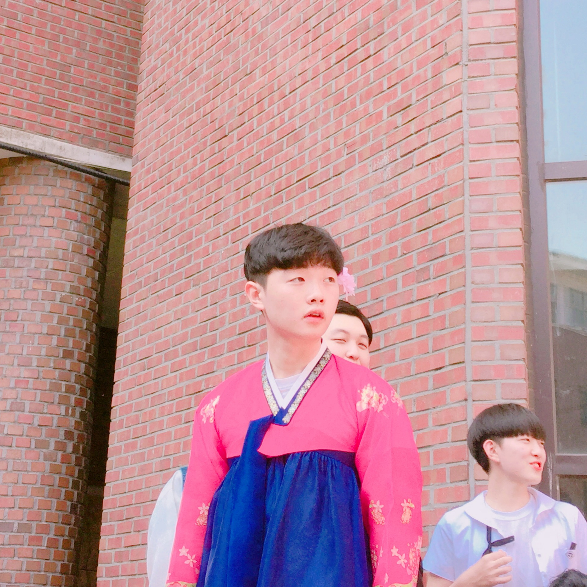

전현식 (全 온전할 전 賢 어질 현 植 심을 식)
AB형
2000년 12월 26일 출생
2007~2013 마재초등학교 졸
2013~2016 운리중학교 졸
2016~2019 광주대동고등학교 졸
2019~현재 국민대학교 경영정보학부 재학
2019.04.04~11.30 국민대학교 제35대 경영정보학부 학생회 ALLWAYS 사무부원
2019.06~08 롯데리아 불광점 프라이 담당
2019.07~09 유클리드어학원 초등 저학년반 담당 선생님
2019.09~현재 국민대학교 경영정보학부 프로젝트실 근로장학생
2019.12.01~현재 국민대학교 경영정보학부 제3대 비상대책위원회 부비대위원장
평소 본인을 건강하다고 생각하며 살아왔으나, 2019년 11월11일 시행한 병역신체검사에서 4급판정을 받고 agent가 되었다. 최근 있었던 재학생 사회복무요원 모집에서 가볍게 떨어졌다^^

최우택 (崔 높을 최 右 도울 우 宅 집 택)
AB형
1999년04월17일 강원도 춘천 출생
2006~2012 춘천교육대학교 부설초등학교 졸
2012~2015 남춘천중학교 졸
2015~2018 강원고등학교 졸
2017~2018 강원고등학교 학생회 멘토링 부장
2018~2019 강원대학교 컴퓨터공학과 중퇴
2018~현재 오일러 수학학원 보충 선생님 및 영업부장 겸임
2019~현재 국민대학교 경영정보학부 재학중
2020~2021 군대 기술행정학과 or 운전학과 입학 예정